Removal
Engine RemovalNOTE: The radio has a coded theft protection circuit. If service to the car requires any of the following, be sure you get the customer's code number before you begin work:
- disconnecting the battery.
- removing the No.39 BACK UP (1OA) fuse.
- removing the radio.
After service, reconnect power to the radio and turn it on The word "CODE" will be displayed. Enter the customer's 5-digit code to restore radio operation.
Make sure jacks and safety stands are placed properly and hoist brackets are attached to the correct positions on the engine
- Make sure the car will not roll off stands and fall while you are working under it.
CAUTION:
- Use fender covers to avoid damaging painted surfaces.
- Unspecified items are common for the M/T cars, A/T cars.
- Unplug the wiring connectors carefully while holding the coupler and the connector portion to avoid damage.
- Mark all wiring and hoses to avoid mis-connection. Also. be sure that they do not contact other wiring or hoses or interfere with other parts.
1. Disconnect the battery negative terminal first, then the positive terminal.
2. Remove the radiator cap
Warning: Use care when removing the radiator cap to avoid scalding by hot coolant or steam.
3. Raise the hoist to full height.
4. Remove the engine splash shield
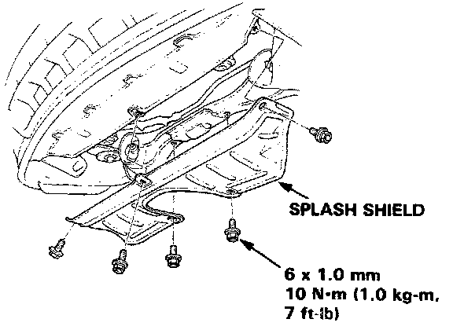
5. Drain the coolant
- Loosen the drain plug from the radiator lower tank.
6. Drain transmission and differential oil/fluid. Use a 3/8" drive socket wrench to remove the drain plugs. Reinstall the drain plugs using new washers.
7. Drain the engine oil. Reinstall the drain plug using a new washer.
8. Lower the hoist.
9. Secure the hood as far open as possible.
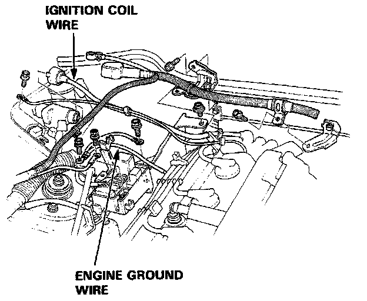
10. Remove the ignition coil wire, noise condenser wire and engine ground wire.
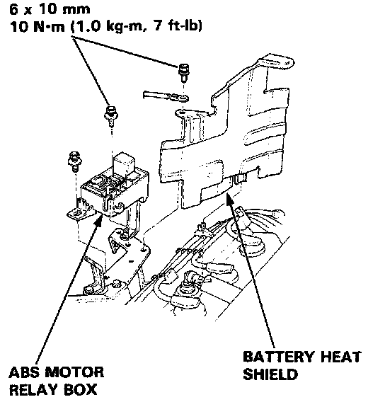
11. Remove the ABS motor relay box and the battery heat shield, then remove the battery.
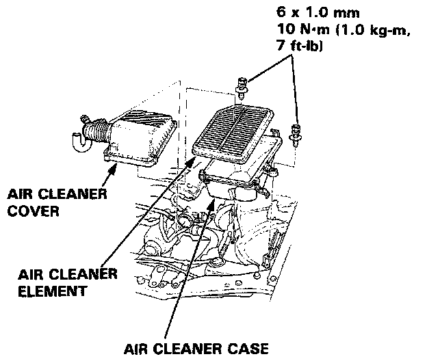
12. Remove the air intake hose and the air cleaner case.
13. Relieve fuel pressure by slowly loosening the service bolt on the fuel filter about one turn. Fuel Pressure Release
- Do not smoke while working on the fuel system Keep open flame away from work area. Drain fuel only into an approved container.
CAUTION
- Before disconnecting any fuel line, the fuel pressure should be relieved as described above.
- Place a shop towel over the fuel filter to prevent pressurized fuel from spraying over the engine.
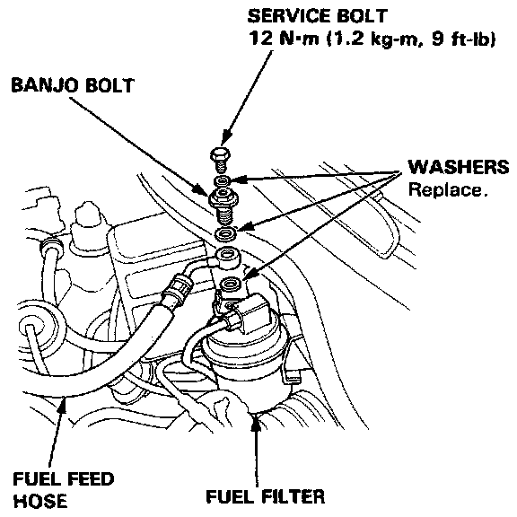
14. Remove the fuel feed hose and the fuel return hose from the pressure control valve.
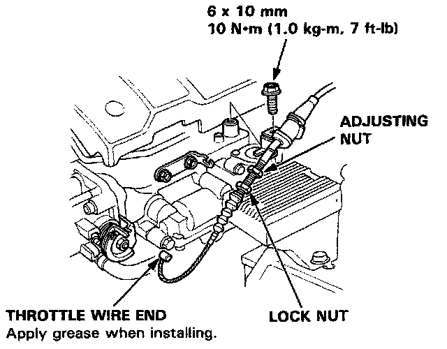
15. Remove the throttle cable by loosening the locknut, then slip the cable end out of the accelerator linkage.
NOTE:
- Take care not to bend the cable when removing it. Always replace any kinked cable with a new one.
- Adjust the throttle cable when installing. Adjustments
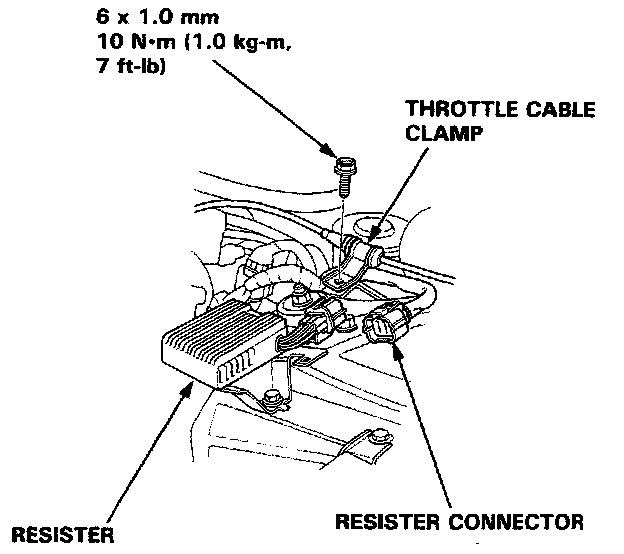
16. Remove the throttle cable clamp and the resistor connector.
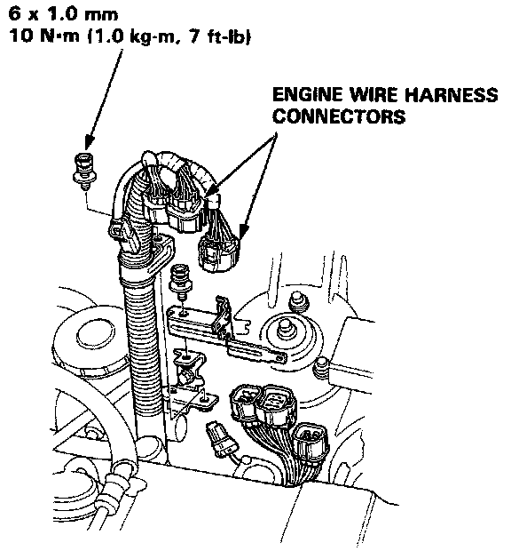
17. Remove the engine wire harness connectors and clamps.
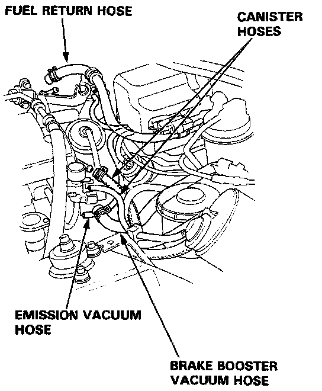
18. Remove the fuel return hose, the canister hoses, the emission vacuum hose and the brake booster vacuum hose.
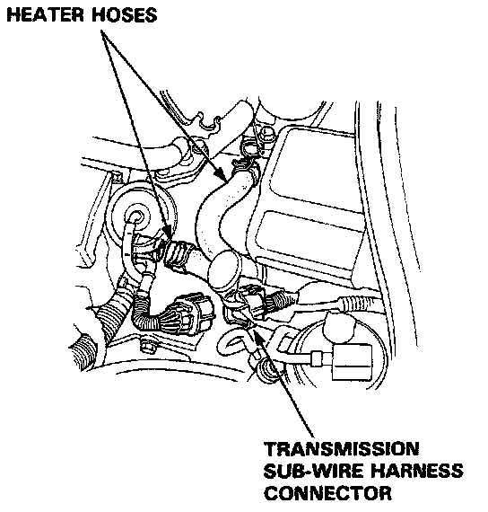
19. Remove the heater hoses and disconnect the transmission sub-wire harness connector (A/T) or back light switch connector (M/T).
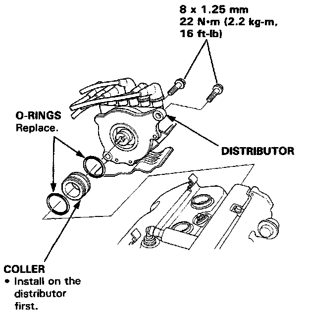
20. Disconnect the ignition wires, then remove the distributor.
NOTE: When installing the distributor, first install the collar on the distributor.
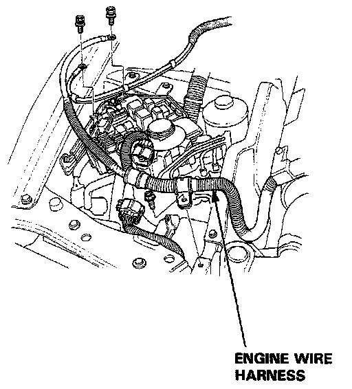
21. Remove the wires from the under-hood relay box, then remove the transmission ground cable.
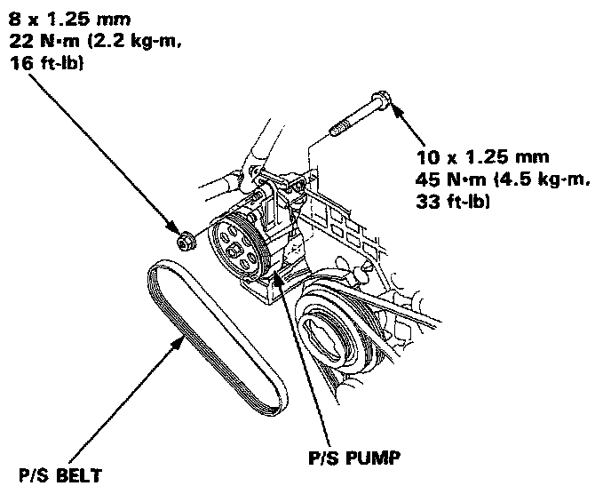
22. Remove the power steering belt and pump. Do not disconnect the P/S hoses.
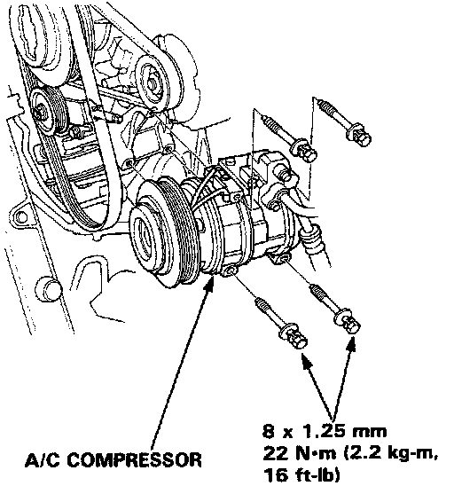
23. Remove the A/C belt and compressor.
- Do not disconnect the hoses. Disconnect the connector.
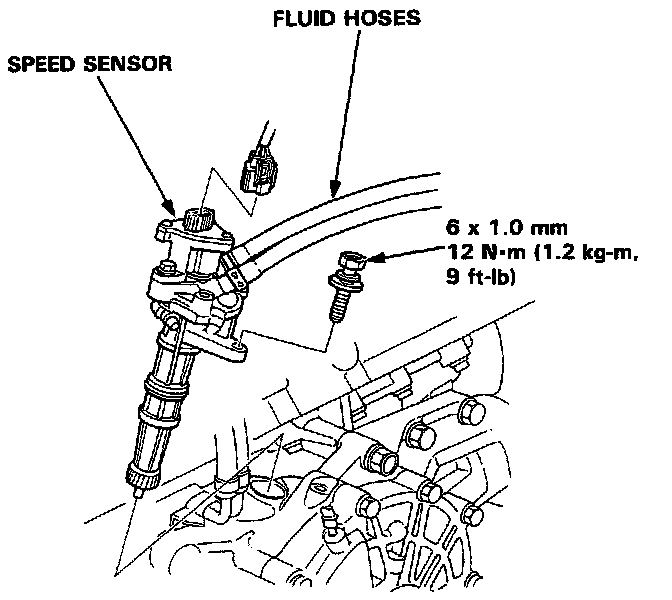
24. Remove the speed sensor. Do not disconnect the fluid hoses.
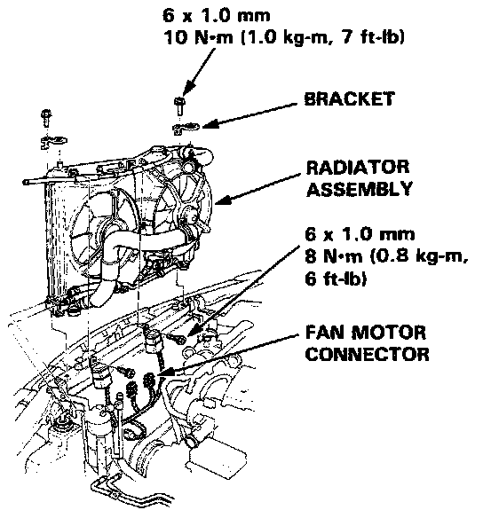
25. Remove the radiator.
- Disconnect the connectors and ATF cooler hoses.
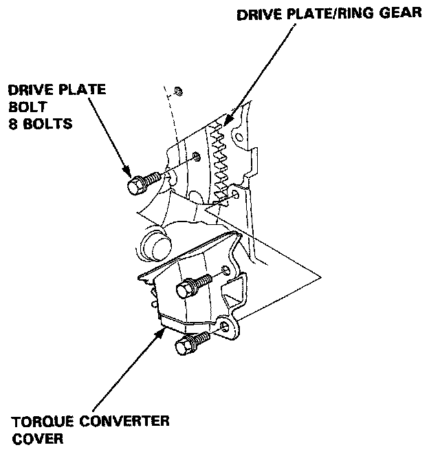
26. Remove the torque converter cover (A/T). Remove the plug, then remove the drive plate bolts one at a time while rotating the crankshaft pulley
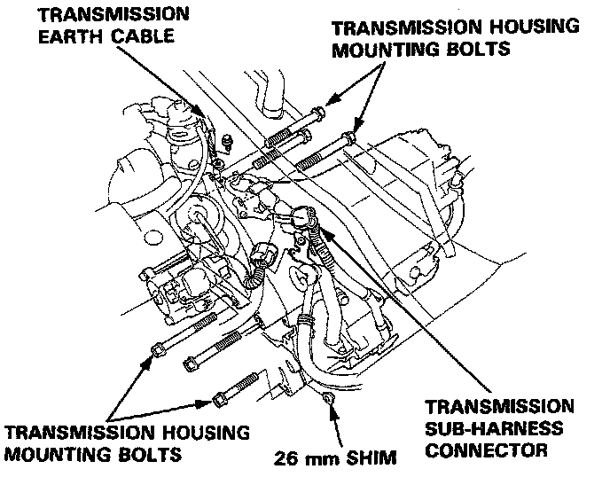
27. Remove the transmission housing mounting bolts and the 26 mm shim.
28. Remove the transmission sub-harness connector.
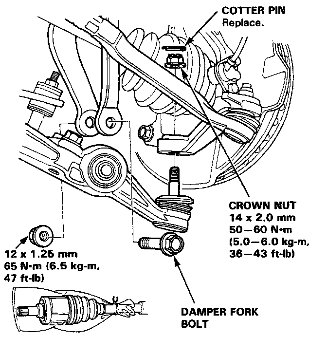
29. Remove the damper forks.
30. Disconnect the suspension lower arm ball joints with the special tool. Ball Joint
31. Remove the driveshafts.
NOTE:
- Coat all precision finished surfaces with clean engine oil or grease.
- Tie plastic bags over the driveshaft ends.
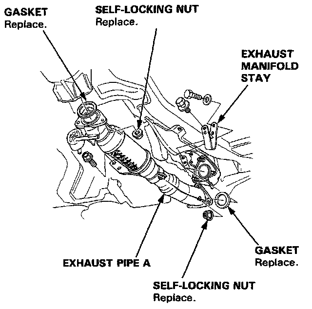
32. Raise the hoist
33. Remove the oxygen sensor, then remove the exhaust pipe A.
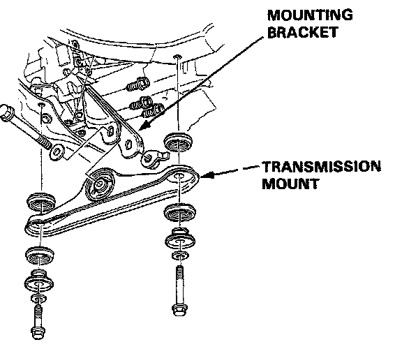
34. Remove the transmission mount and mounting bracket.
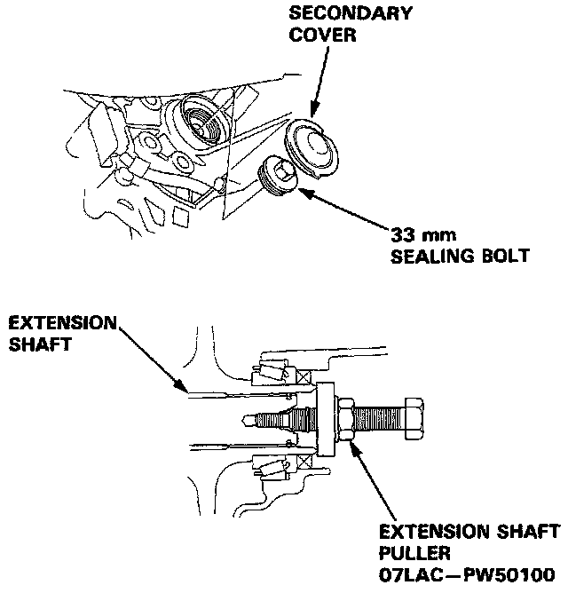
35. Shift to 1st gear (M/T) or P position (A/T).
36. Remove the secondary cover and 33 mm sealing bolt.
37. Remove the extension shaft from the differential using the special tool as shown.
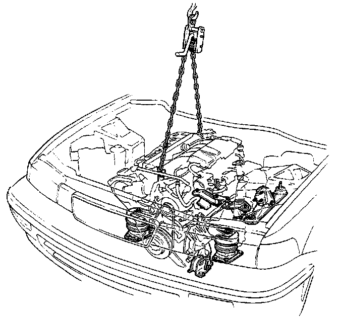
38. Attach a chain hoist to the engine.
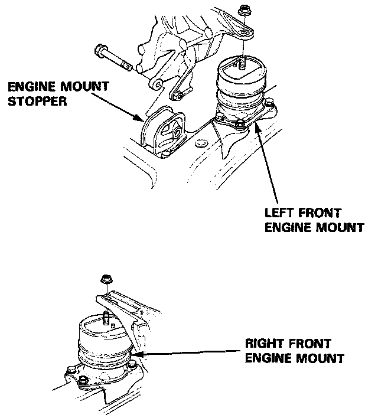
39. Remove the left front engine mounting nut and engine mount stopper bolt.
40. Remove the right front engine mounting nut.
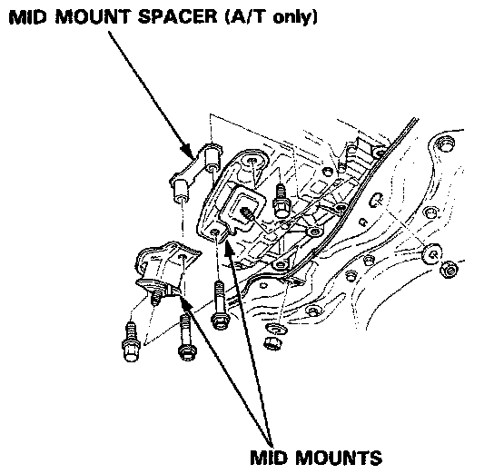
41. Remove the mid mounts.
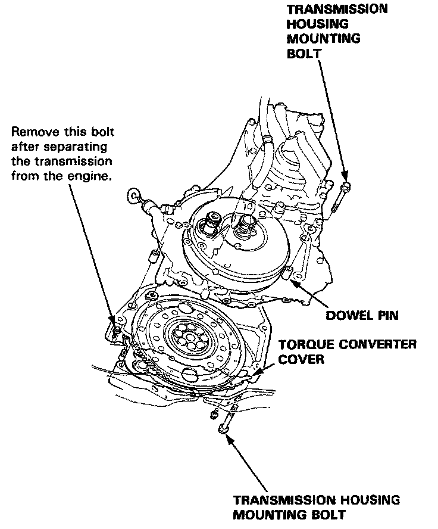
42. Remove the transmission housing mounting bolts and clutch cover (M/T) or torque converter cover (A/T), then separate the engine and the transmission.
- Attach the transmission jack with rubber pad or wooden block.
43. Install the mid mounts to the transmission and retorque the mounting bolts.
44. Raise the chain hoist to remove all slack from the chain.
45. Check that the engine is completely free of vacuum hoses, fuel and coolant hoses, and electric wires.
46. Slowly raise the engine approximately 6" Check once again that all hoses and wires have been disconnected from the engine.
47. Raise the engine all the way and remove it from the car.